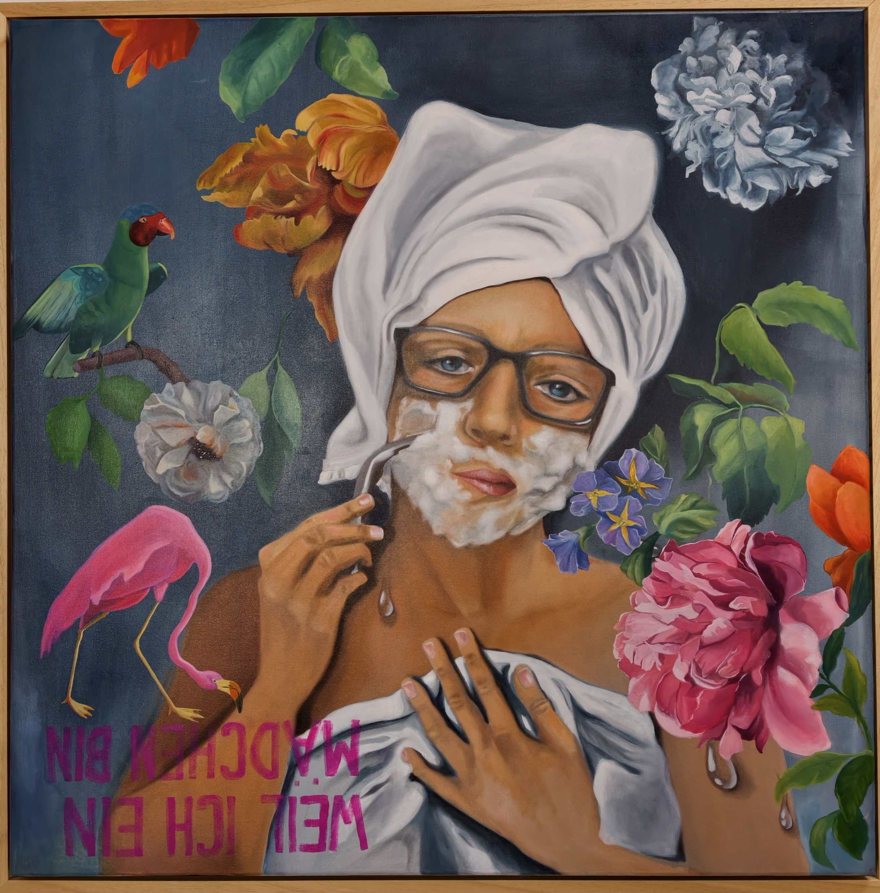

Öl auf Leinwand · 100 × 100 × 4,5 cm · 2026
Preis: € 4.100
"Weil ich ein Mädchen bin"ist kein Statement über Identität,- es ist eine Einladung,sie zu denken,zu fühlen,zu verschieben. Zwischen Blüten und Rasierschaum, Ironie und Intimität eröffnet sich ein zarter,aber kraftvoller Dialog über Geschlecht, Selbstbild und gesellschaftlicher Erwartung.Kunstals Spiegel ,Puzzle und Spiel zugleich - ein Prozess der nicht endet,solange jemand hinsieht.
*Because I Am a Girl* is not a statement about identity—it is an invitation to think about it, to feel it, and to reshape it. Between blossoms and shaving foam, irony and intimacy, a delicate yet powerful dialogue unfolds around gender, self-image, and social expectations. Art becomes a mirror, a puzzle, and a game all at once—a process that never ends as long as someone is looking.